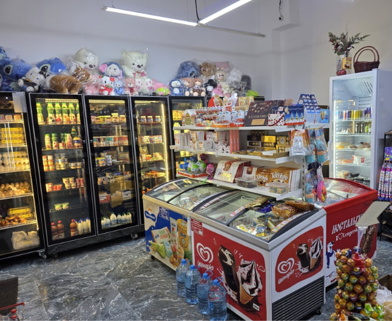

This section offers various non-food items such as toys, socks, small household goods, and other useful everyday accessories.
Product Variety

This part contains many different items such as ice cream, beverages, snacks, candies, dairy products, and little toys. Consumers will obtain both culinary and non-culinary goods in one space.
Household cleaning
Cleaning items for home use including soaps, detergents for laundry clothes, dishwashing fluids, cleaning sprays, sponges, and more are all addressed in this paragraph.
Details on the remaining sections:
Quick bites
Beverages
Fruit and vegetables
Snacks
Sweets
Food products
Meat
Alcohol
Description of each section:
Quick bites:
Ready-to-eat food and small meals for a quick snack.
Beverages:
Water, juices, soft drinks, energy drinks and other beverages.
Fruit and vegetables:
Fresh fruits, vegetables and other everyday produce.
Snacks:
Chips, crackers, nuts and other light snacks.
Sweets:
Chocolate, candies, biscuits and other sweet products.
Food products:
Everyday groceries such as bread, pasta, rice, dairy products and canned food.
Meat:
Fresh and packaged meat products, sausages and other meat items.
Alcohol:
Alcoholic beverages available for adult customers.